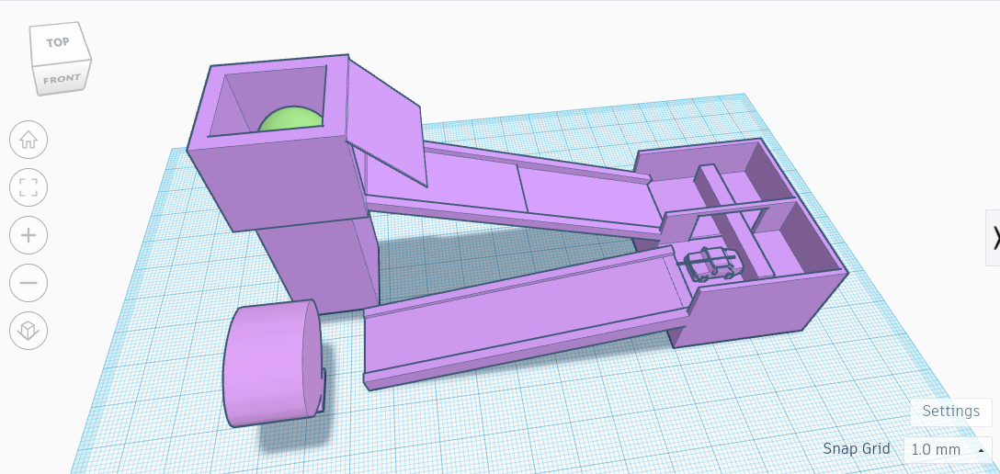
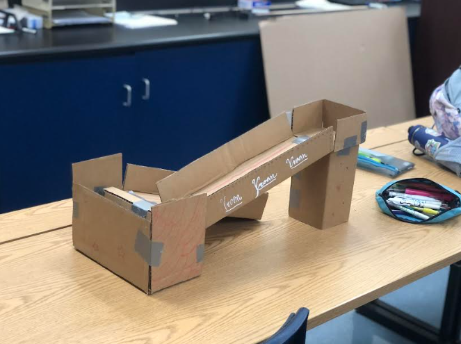
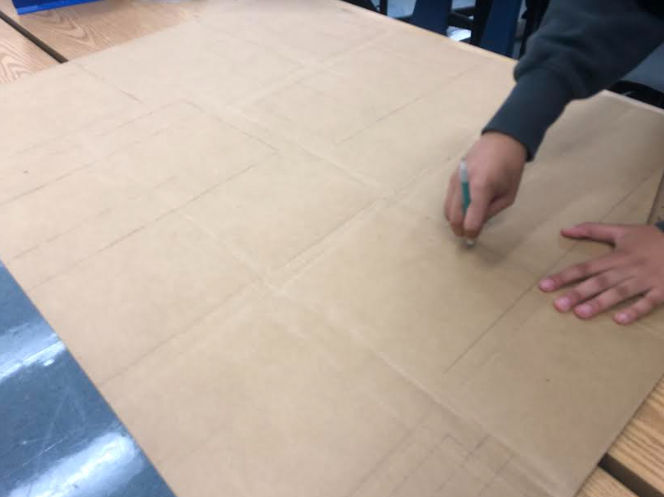
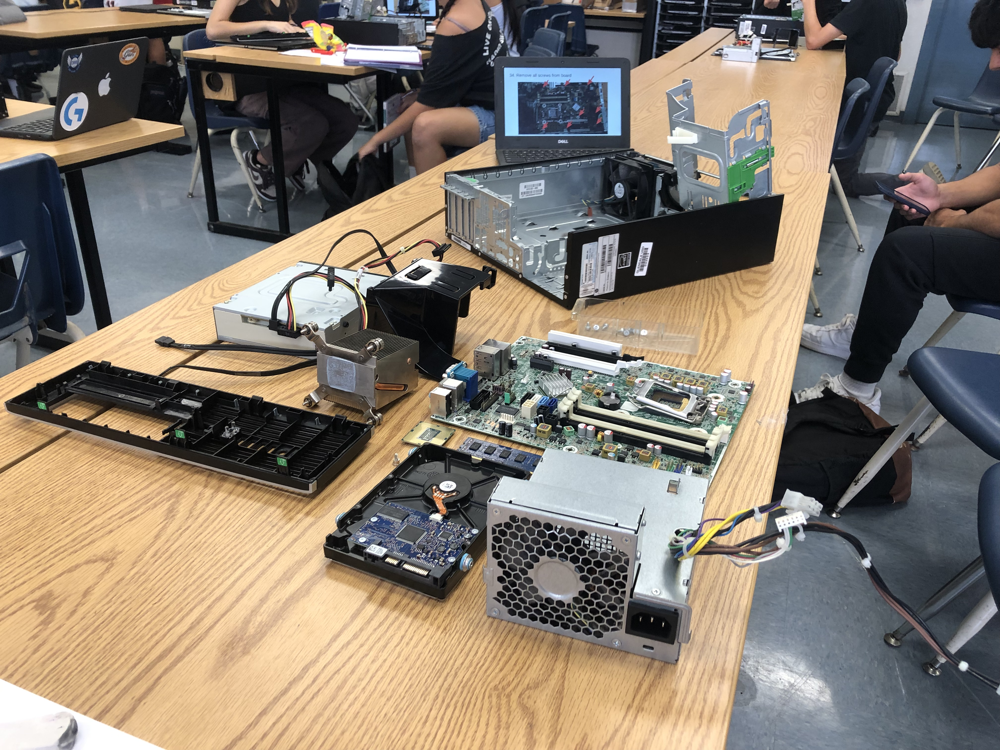
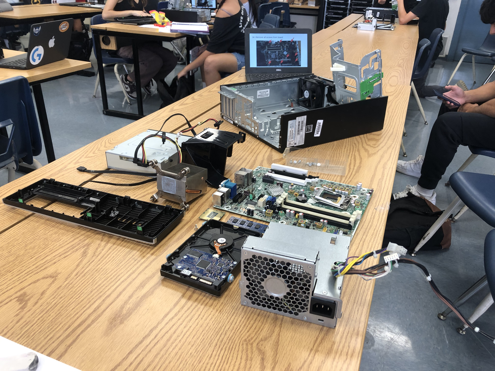

8/25/23-This is my first journal entry. We used pipes and marbles today to learn how to work together and figure out a better solution to a problem. Our team lost but we still figured out a couple tricks.
9/11/23 - This is my second journal entry. We CADed our rube golber machine and started to cut out the cardboard. I enjoyed it a lot and it was very fun to work with my team.
9/15/23-This is my third journal entry. We just finished our rube golber machines and tested it a few times. It worked nicely and is very simple. Thankfully, it worked every time that we tried it. There was a couple times when we came to a thinking block in our group but we thought about the restraints and criteria of the project and figured out a good solution to the problem.
 9/29/23-This is my third journal entry. This week, we disected computers and learned about computer engineering. Computer engineering is a very broad engineering field and contain brnahces such as comp sci, software, and coding. From the disection, I learned the different parts of the computer and where they belong.
 
